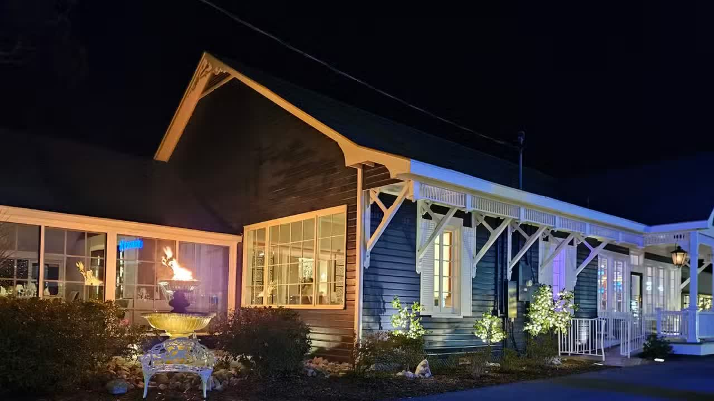
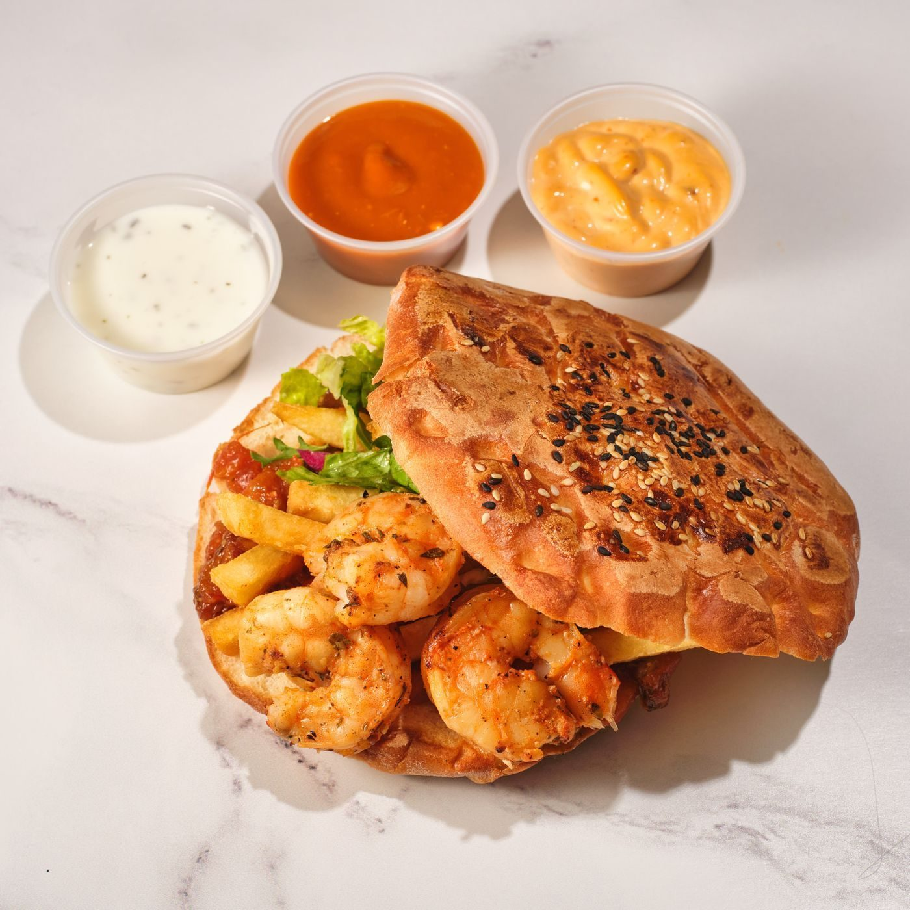

Ocean Springs, Mississippi
Services at Trilby's
A Coast tradition in Ocean Springs: Creole, Cajun, and Southern seafood from executive chef Anthony Rametta.
Menu
Seafood mains
Southern plates
Starters
Desserts
Reservations
Reservations through OpenTable for parties of 1 to 6; larger parties call the restaurant.
At the table

